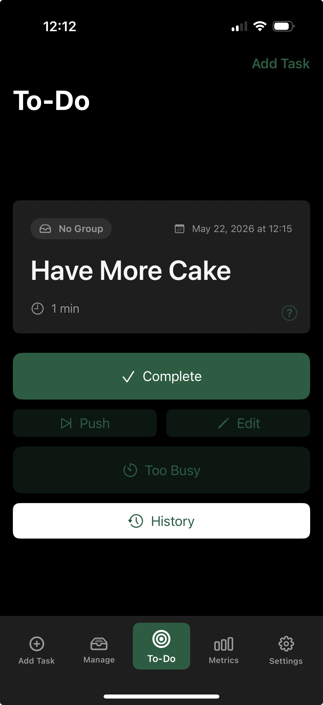

Focused Productivity for iOS
Priorities
Focus on the next task that matters.
Priorities keeps your work in a simple execution queue, surfacing one highest-priority actionable task at a time instead of asking you to stare down a giant backlog.
Built to reduce decision paralysis and to-do list fatigue while supporting productive habits one step at a time.

About
A quieter way to choose what comes next.
Priorities helps you add, manage, and complete tasks without turning your day into a sorting exercise. It is designed for focused execution: decide what matters, keep moving, and come back to the queue when you're ready for the next thing.
Support
Need help with Priorities?
For questions, bug reports, or help using the app, send a support request and include the iOS version, device model, and a short description of what happened.
Contact SupportPrivacy
Your tasks stay on your device.
Priorities uses local storage only. The app does not require an account, does not send your tasks to a backend, and does not include a sync service.
If you contact support, any information you choose to share will be used only to respond to your request.
PrivacyFeedback
Help shape what comes next.
Share ideas, requests, or notes about what would make Priorities more useful in your day-to-day planning.
Send FeedbackSupport Development
Developer Coffee Fund
If Priorities helps your day feel a little lighter, you can support continued development.
Developer Coffee Fund